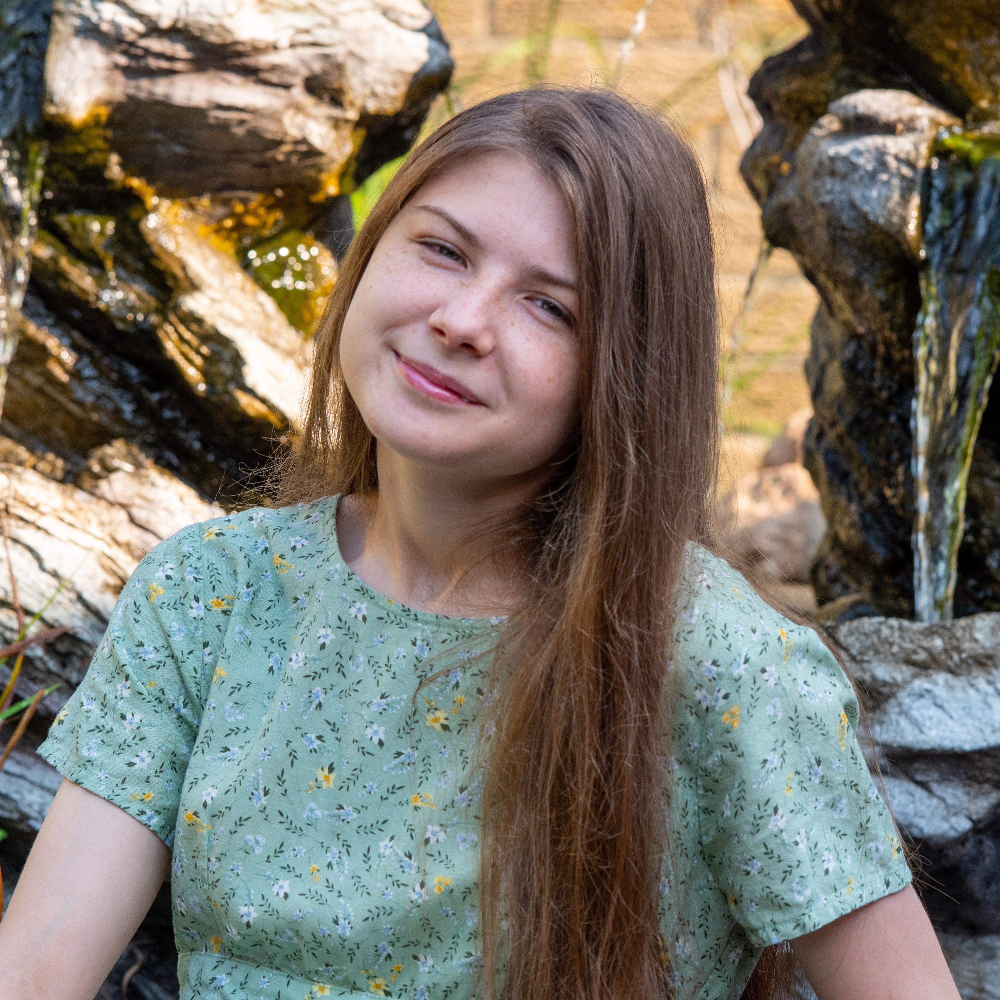

ABOUT ME

My name is Courtney Hanses. I am a graphic design student at Central Michigan University from Westphalia, Michigan. I work in CMU’s graphic design office Media Graphix. Since I was a young child, I’ve been interested in making art and being creative. When I was sixteen, I decided that I was going to become a graphic designer. It is a combination of art and computers—two of the things I am most interested in. I engage in other creative outlets such as traditional and digital illustration, sculpture, photography, and fiction writing. I am knowledgeable in using Adobe Illustrator, Photoshop, InDesign, and Premiere Pro. I also have experience in Figma and HTML/CSS.